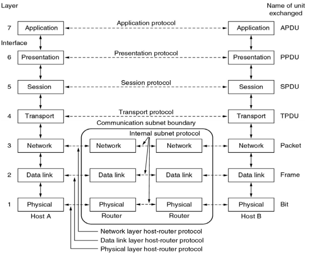
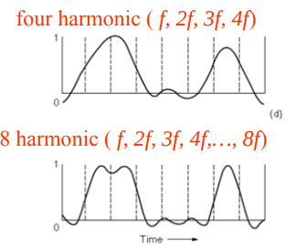
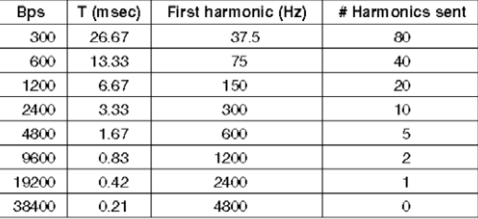
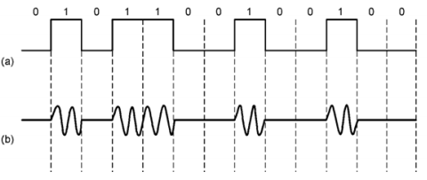
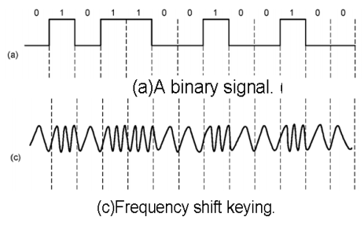
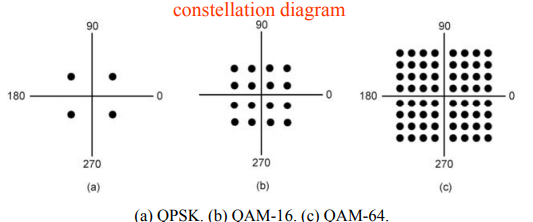
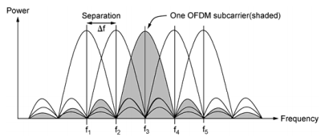

Table of Contents
- 1. Chapter 1: Introduction
- 1.1. Social Issues
- 1.2. Network Hardware
- 1.3. Network Protocol
- 1.4. Design Issues for the Layers
- 1.5. Connection-oriented vs Connectionless Services
- 1.6. Service Primitives
- 1.7. Service to Protocol Relationship
- 1.8. Reference Models
- 1.9. OSI Reference Model
- 1.10. TCP/IP Reference Model
- 1.11. OSI Model vs TCP/IP Model
- 1.12. A Critique of the TCP/IP Reference Model
- 1.13. Internet: The ARPANET
- 1.14. RFID and Sensor Networks
- 1.15. Network Standardization
- 1.16. Network Standardization
- 2. Chapter 2: The Physical Layer
- 2.1. Introduction
- 2.2. Fourier Analysis
- 2.3. Bandwidth-Limited Signals
- 2.4. The Maximum Data Rate of a Channel
- 2.5. Guided Transmission Data
- 2.6. Electromagnetic Spectrum
- 2.7. Politics of the Electromagnetic Spectrum
- 2.8. Digital Modulation and Multiplexing
- 2.9. Passband Transmission
- 2.10. Frequency Division Multiplexing
- 2.11. Time Division Multiplexing
- 2.12. Code Division Multiplexing
- 2.13. Public Switched Telephone Network
- 2.14. Fiber to the Home (FttH)
- 2.15. Trunks and Multiplexing
Computer Communications and Networks
Nyquist's Theorem for Exam 1
1 Chapter 1: Introduction
- Computer Networks
- interconnected collection of autonomous computers
- Autonomous
- no master/slave relation
- (no term)
- Distributed Systems are higher layer than Computer Network
1.1 Social Issues
- Network Neutrality
- Argument for communications that are not differentiated by content or source
- Content Ownership issues
- DMCA takedowns etc
- (no term)
- Anonymity
- (no term)
- Privacy
- (no term)
- Theft, malicious activity
1.2 Network Hardware
1.2.1 Taxonomy by Transmission Media
- Wired Networks:
- Twisted pair
- Coaxial Cable
- Fiber Optics
- Wireless Networks:
- Radio Transmission
- Microwave
- Satellites
- Wired-Wireless Integrated Networks
1.2.2 Taxonomy by Transmission Technology
- Broadcast Links
- Single Channel Shared by all machines.
- Packets sent by one are received by all (broadcasted).
- Upon receiving a packet, each machine checks if the packet is relevant: either received or ignored
- one to all
- one to a group/subset
- Point-to-Point Links
- Many connections between individual pairs of machines
- A packet may travel through many intermediate machines otw to destination
- Routing play important role
- Localized networks tend to use broadcasting
- Large networks tend to use point-to-point
1.2.3 Taxonomy by Scale
| Scale | Type |
|---|---|
| Vicinity | PAN (Personal Area Network) |
| Building | LAN (Local Area Network) |
| City | MAN (Metropolitan Area Network) |
| Country | WAN (Wide Area Network) |
| Planet | The Internet |
- PAN
- Bluetooth PAN, computer connmail.google.com/mail/u/1/#inboxected to printer, speaker, keyboard
- LAN
- Devices connected in a home to a common access point or ethernet switch.
- MAN
- A metropolitan area network based on cable TV
- WAN
- Cover a country or continent. An ISP network is a WAN. A VPN is also a WAN.
- Internetwork
- A collection of interconnected networks. The most obvious example is the internet.
1.3 Network Protocol
- Protocol layering is the main structuring method used to divide up network functionality.
- At each layer, peers communicate with each other virtually. The communications are actualized by underlying layers. (lower-level of abstraction)
- These lower layer services are accessed by an interface
- At bottom, messages are physically transmitted via the medium.
- Layers, protocols, and interfaces.
- make complicated protocols more manageable. Provides information hiding/decoupling. This allows them to be changed with minimal hassle.
- An a priori agreement between the communicating parties on how the communication is to proceed.
- Lower layers protocols often contain additional header information including things like sequence number (e.g. if we needed to split our message into multiple parts), address, size, time, and/or other control fields.
- Additionally, some networks have size limits, which means that we may have to split our message into multiple parts when moving to lower level protocols.
1.4 Design Issues for the Layers
- Addressing
- A way to uniquely identify senders and receivers
- Error Control
- error-detecting and correcting mechanism
- Order
- Mechanism & out of order control, such as buffers
- Flow Control
- Deal with problems e.g. A fast sender overwhelming a slow receiver, agreed-on transmission rate for senders.
- Fragmentation
- put into small packets to transmit separately
- (no term)
- Multiplexing
- Routing
- decision on transmitting path among many available paths.
- (no term)
- Each layer solves a particular problem but must include mechanisms to address a set of recurring design issues.
| Issues | Example mechanism |
|---|---|
| Robust to failures | Codes for error detection/correction, routing around failures |
| Network growth and evolution | Addressing and naming, Protocol layering |
| Allocation of resources | Multiple access, congestion control |
| Security | Confidentiality of messages, Authentication |
1.5 Connection-oriented vs Connectionless Services
- Connection-oriented:
- A connection is built before transmission occur
- e.g. TCP, seems that all packets go to the same path, but not really.
- Connectionless:
- No connection is setup e.g. postal service
- Each packet must carry destination address, and each packet may take different path
- e.g. UDP
| Connection Type | Service | Example |
|---|---|---|
| Connection- | Reliable message stream | Sequence of pages |
| Oriented | Reliable byte stream | Remote Login |
| Unreliable connection | Digitzed voice | |
| Connectionless | Unreliable datagram | Electronic junk mail |
| Acknowledged datagram | Registered mail | |
| Request-reply | Database query |
1.6 Service Primitives
- Five service primitives for implementing a simple connection-oriented service.
- TCP socket programming has these functions
- Two "blocks"
- Connectionless service use only SEND
| Primitive | Meaning |
|---|---|
| LISTEN | Block waiting for an incoming connection |
| CONNECT | Establish a connection with a waiting peer |
| RECEIVE | Block waiting for an incoming message |
| SEND | Send a message to the peer |
| DISCONNECT | Terminate a connection |
1.7 Service to Protocol Relationship
- A service is a set of primitives that a layer provides to the layer above. Says nothing about implementation
- A protocol is a set of rules governing the format and meaning of the packets.
- Analogy: Abstract Data Type is to Implementation as Service is to Protocol
1.8 Reference Models
- OSI Reference Model
- TCP/IP Reference Model
1.9 OSI Reference Model

- From bottom up:
- Physical Layer
- Transmitting raw bits over physical medium
- Data Link Layer
- Break messages into data frames and transmit them sequentially.
- Error Control: Ack
- Flow Control: traffic regulation, buffer size
- For broadcast networks, how to control access to the shared medium: Medium Access Control sublayer.
- Allows users on different machines to establish "sessions" between them
- Syntax and semantics of the information transmitted.
- Applications above such as HTTP, WWW, FTP, Email
1.9.1 In Summary
- OSI is a principled international standard with seven layers:
1.10 TCP/IP Reference Model
- Derives from ARPANET
- Doesn't use Presentation or Session layer from OSI Reference Model
- From 7 layers to 5.
1.10.1 Layers
- Internet Layer
- Internet Protocol (IP)
- Connectionless service
- Routing & Congestion control
- Transport Layer
- End-to-end protocols
- Transmission Control Protocol (TCP): reliable connection-oriented protocol
- User Datagram Protocol (UDP): unreliable, connectionless protocol
- Application Layer
- TELNET, FTP, SMTP, etc.
- Host-to-Network Layer
- Not defined in TCP/IP Model
1.10.2 Protocols in Different Layers
| Layer | Protocols |
|---|---|
| Application | HTTP, SMTP, RTP, DNS |
| Transport | TCP, UDP |
| Internet | IP, ICMP |
| Link | DSL, SONET, 802.11, Ethernet |
- Example of differences in application layer protocols: Real-time Transport Protocol (RTP) may not need to retransmit lost packets, because in a real-time scenario like voip, these packets are not needed if they are late.
1.11 OSI Model vs TCP/IP Model
- OSI model distinguishes
- Services
- Interfaces
- Protocols
- OOP concept: method, attributes, implementations
- OSI was created before the protocols were defined.
- TCP/IP was created after protocols were defined
- OSI was very influential and had clear goals/concepts, but was bogged down by complexity and politics.
- TCP/IP had very successful protocols, but a weak model derived later.
1.11.1 Why OSI failed
- Bad timing
- Bad technology: many layers, complex and redundant
- Bad implementation
- Politics
- See "two elephants"
1.12 A Critique of the TCP/IP Reference Model
Problems:
- Service, interface, and protocol are not distinguished
- Not a general model
- Host-to-network "layer" not really a layer
- No mention of physical and data link layers
- Minor protocols are deeply entrenched and hard to replace
1.13 Internet: The ARPANET
- From ARPANET to Internet
- ARPANET is a research network sponsored by DoD
- later connected hundreds of universities and government installations using leased telephone lines
- Had trouble when satellite and radio networks were added
- TCP/IP begins in 70s
- TCP/IP was built into the linux kernel
1.13.1 Architecture
- First Dialup reuse phone lines
- DSL (Digital Subscriber Line) improved on this by sending digital transmission over these lines.
- These require DSLAM (Digital Subscriber Line Access Multiplexer) which convert between digital and analog signal
- ISP networks may be regional, national, or international
- Tier 1 ISPs are the largest of these providers. They are the backbone of the internet.
- IXP (Internet eXchange Point) these are points where ISPs connect their networks to exchange traffic
- Within each network routers switch packets
- Between networks, traffic exchange is set by business agreements.
- Customers connect to the network by many means:
- Cable, DSL, Fiber, 3G/4G, Dialup
1.13.2 Cellular Phone Systems
- 1st Generation [AMPS (Advanced Mobile Phone System)]: limited channels, analog
- 2nd Generation [GSM (Global System for Mobile communications), DAMPS, CDMA]: Digital
- DAMPS created to be backwards compatible with AMPS
- 3rd Generation [UMTS (Universal Mobile Telecommunications System), also called WCDMA (Wideband Code Division Multiple Access)]: Digital, both voice and data, up to 14 Mbps down, 6 Mbps up.
- 4th Generation: integrated
1.13.3 3G Mobile Phone Networks
- 3G Network is based on spatial cells. Each cell services mobile devices via a base station.
- As mobile devices move, base stations hand them off from one cell to the next
- UMTS Network:
- Phone connects to base station (node B)
- Base stations connect to Radio Network Controller. Here traffic is divided between data and voice signals.
- Previously this was a hard handover, where a cellphone would stop connection with one tower and begin connection with another. Today, we have soft handover because cellphones have multiple antenna and make begin connection to next tower before terminating previous connection
1.13.4 Wireless LAN
- Signals in the 2.4 GHz ISM band vary in strength due to many effects, such as multi-path fading due to reflections. As such, required complex transmission schemes e.g. OFDM
- CSMA (Carrier Sense Multiple Access) designs are used because the range of a single radio may not cover the entire system, and multiple radios may incompletely overlap or interfere.
- But instead, most WLANs simply are not Ad Hoc networks, but instead make use of an Access Point.
1.14 RFID and Sensor Networks
- Passive networks in everyday objects:
- Tags are placed on objects
- Readers send signals that the tags reflect to communicate
- most common, 902-928 MHz band, distance of several meters
- 13.56 MHz, used in passports, credit cards, books, etc.
- Active RFID also occurs.
- Sensor networks spread small devices over an area. These devices send sensor data to collectors.
1.15 Network Standardization
- ITU (International Telecommunication Union), an agency of the UN
- Additionally, we have:
- ISO (International Standards Organization)
- NIST (National Institute of Standards and Technology)
- IEEE (Institute of Electrical and Electronics Engineers)
1.16 Network Standardization
- When the ARPANET was set up, DoD created an informal committee to oversee it. Called the IAB (Internet Activities Board)
- Later changed to Internet Architecture Board
- Published a series of technical reports called RFCs (request for comments)
- Then, in 1989, the IRTF (Internet Research Task Force) and IETF (Internet Engineering Task Force).
- IRTF concentrates on long-term research while IETF focuses on short-term engineering issues
- Later, the Internet Society was created. It is governed by elected trustees who appoint the IAB's members.
- RFCs can become standards, but a process must be followed. To advance to the Draft Standard stage, a working implementation must have been rigorously tested by at least two independent sites for at least 4 months.
- If the IAB is convinced, it can declare the RFC to be an Internet Standard.
- Standards define what is needed for inter-operability
| Body | Area | Example Standards |
|---|---|---|
| ITU | Telecommunications | G.992, ADSL |
| H.264, MPEG4 | ||
| IEEE | Communications | 802.3, Ethernet |
| 802.11, WiFi | ||
| IETF | Internet | RFC 2616, HTTP/1.1 |
| RFC 1034/1035, DNS | ||
| W3C | Web | HTML5 Standard |
| CSS Standard |
2 Chapter 2: The Physical Layer
2.1 Introduction
- It is the foundation on which other layers are built.
- Key problem is to send digital message (bits) using only analog signals (modulation)
- Information transmitted on wires by varying physical properties such as voltage/current.
2.2 Fourier Analysis
- In early 19th century, Fourier proved that any reasonably behaved periodic function g(t) with period T,
- where f = 1/T, the fundamental frequency
- an & bn, amplitudes of nth harmonics
- c, constant
- Imagining that a data signal with a finite duration is periodic (repeats indefinitely), we can analyze signals using Fourier techniques.
- See slides for Fourier Analysis of an example signal.
- Fourier Analysis can tell us about the amplitude of our signal at different harmonic numbers.
2.3 Bandwidth-Limited Signals
- Transmission lose some power.
- But all Fourier components are not equally diminished. Higher frequency components lose more power.
- This introduces distortion.
- Usually, in a wire, amplitudes are transmitted mostly undiminished. But frequencies above a cutoff frequency are diminished.
- The width of the frequency range transmitted without strong attenuation is called the bandwidth
- In practice, the cutoff is somewhat arbitrary, quoted as the frequency at which received power has fallen by half.
- The bandwidth is a physical property of the specific transmission medium.
- Filters are often used to further limit the bandwidth of a signal.
- 802.11 wireless channels use up to roughly 20 MHz, so the 802.11 radios filter the signal bandwidth to this size.
- Another example, television channels occupy 6 MHz each. This filtering lets more signals share a given region of spectrum which improves the overall efficiency of the system.
- It means that the frequency range for some signals will not start at 0 (passband).
- Signals that run from 0 up to a maximum frequency are called baseband signals.
- Signals that are shifted to occupy a higher range of frequencies (as is the case for all wireless transmissions) are called passband signals.

- Having less bandwidth (fewer harmonics) degrades the signal
- An ordinary telephone line, often called a voice-grade line has an artificially introduced cutoff frequency just above 3000 Hz.
- This means that the number of the highest harmonic passed through is roughly 3000/(L/8) or 24000/L
- (L/8 because 8-bits in a byte)

- The table above shows that we can increase transmission rate, by decreasing number of harmonics sent, but this degrades our signal. Eventually it will be incomprehensible. We need at least ~8 harmonics.
- In fact, we can achieve higher data rates with coding schemes that make use of several voltage levels.
- Just note the ambiguity between analog bandwidth (frequency) and digital bandwidth (data rate)
2.4 The Maximum Data Rate of a Channel
- In 1924, an AT&T engineer, Henry Nyquist, realized that even a perfect channel has a finite transmission capacity.
- In 1948, Claude Shannon carried the work further and extended it to the case of a channel subject to random noise. (most important paper in information theory)
- low-pass filter is a filter that attenuates signals with frequencies higher than a cutoff
- sampling is the reduction of a continuous signal to a discrete signal.
- Nyquist showed that a signal run through a low-pass filter of bandwidth B, the signal can be reconstructed by making 2B samples per second.
- Nyquist's theorem
- maximum data rate = 2B log2 V bits/sec
- where signal consists of V discrete levels
- SNR (Signal-to-Noise Ratio): S/N, but normally 10 log10 S/N
- for signal power S and noise power N
- this scale is used due to the high range of possible S/N ratios
- Units of log: decibels (dB)
- An S/N ratio of 10 is 10 dB, ratio of 100 is 20 dB, ratio of 1000 is 30, etc.
- Shannon's maximum data rate or capacity with Bandwidth B & S/N:
- maximum bits/sec = B log2 (1 + S/N)
- Example: ADSL with 1 MHz and SNR=40dB we get 13 Mbps. In practice, ADSL is specified up to 12 Mbps.
- digital repeaters can be used to amplify signal and improve SNR.
2.5 Guided Transmission Data
- Magnetic Media
- Twisted Pair
- Coaxial Cable
- Power Lines
- Fiber Optics
2.5.1 Magnetic Media
- If high bandwidth + cost per bit is the key factor, it can be cost effective to ship hard disks.
- "Never underestimate the bandwidth of a station wagon full of tapes hurtling down the highway"
2.5.2 Twisted Pair
- The oldest and most common media. A twisted pair of insulated copper wires.
- Category 3 UTP (old)
- Category 5 UTP (new)
- Unshielded Twisted Pair
- Category 5 UTP has 4 twisted pairs. 100 Mbps Ethernet uses 2 for each direction.
2.5.3 Link Terminology
- Full-duplex link
- transmission in both directions simultaneously
- Half-duplex link
- both directions, but not at the same time
- Simplex link
- Fixed direction; uncommon
2.5.4 Coaxial Cable
- Longer distances at better speeds and less noise than twisted pairs
2.5.5 Power Lines
- Convenient, but in general does a horrible job.
- An older idea, used by electricity companies for low-rate communication such as remote metering as well as in the home to control devices.
- In more recent years, high-rate communication over these lines both inside the home as LAN and outside the home for broadband access.
- Problems:
- Electrical properties (wiring) vary from home to home and change as in-home power usage changes (e.g. turning on a drier or space heater)
- Additionally transient currents (appliances turned on and off) create electrical noise
- Despite these difficulties, it is practical to send at least 100 Mbps over typical household electrical wiring using the right communication schemes.
- Electrical signals at 50-60 Hz and attenuates at higher frequency for high-rate data communication.
2.5.6 Fiber Optics
- Increase in computation speed and communication speeds have historically been relatively similar.
- Both around 16x per decade.
- CPUs are approaching speed limitations
- Fiber can be very fast, but is expensive.
- Key for fiber, is to have reflection angle such that all light is reflected and none refracted
- many different rays bouncing around at different angle
- Single-mode fiber
- Fiber's diameter is reduced to be very short. Light propagates like a straight line. More expensive, but more effective (longer travel distance)
- Fiber has enormous bandwidth (THz) and tiny signal loss
2.5.7 Fiber Cables
- Single fiber
- has core so narrow (10 microns) light can not bounce around
- Used with lasers for long distances
- Multiple fiber
- Light can bounce (50 micron core)
- Used with LEDs for cheaper, shorter distance links
2.6 Electromagnetic Spectrum
- To manage interference, use of spectrum is regulated and licensed e.g. sold at auction.
- In addition, there are also unlicensed (ISM) bands. Free for use at lower power.
- Used for networking; WiFi, Bluetooth, etc.
- hops from frequency to frequency hundreds of times per second. Popular for military as its hard to detect and jam
- uses different codes for multi-plexing
- uses a code sequence to spread the data signal over a wider frequency band. Used to let multiple signals share same frequency band
- sends a series of rapid pulses, varying their positions to communication information.
2.6.1 Radio Transmission
- In the VLF, LF, and MF bands, radio waves follow the curvature of the earth.
- In the HF band, they bounce off the ionosphere.
2.6.2 Microwave Transmission
- Above 100 Mhz, waves travel in nearly straight lines.
- Satellite TV dish must be accurately aligned.
- MCI: Microwave Communications Inc.
- Bought small plots every 50km for towers. Later acquired by verizon
- Microwave does not pass through buildings well.
- Increased demand has lead to use higher and higher frequencies
- Bands up to 10 GHz are now in routine use. Above 4 GHz absorption by rain/humidity becomes a problem
2.6.3 Infrared Transmission
- TV remote
2.7 Politics of the Electromagnetic Spectrum
- US has FCC (Federal Communications Commission)
- Three algorithms:
- Beauty Contest
- Each carrier argues why its proposal serves public interest
- Government officials decide
- Leads to bribery and corruption
- Lottery
- problem: companies with no interest enter the lottery then resell
- Auction
- create monopolistic environment
- Beauty Contest
- The ISM (industrial, scientific, and medical) bands
- Used by garage door openers, cordless phones, bluetooth, wifi, etc.
- FCC mandates that devices in this band limit their transmit power and use other techniques to spread their signals over a range of frequencies
- FCC 2009 allows unlicensed use of white spaces around 700 MHz.
2.8 Digital Modulation and Multiplexing
- Digital modulation
- converting between bits and signals
- Baseband transmission
- signals occupy frequencies from zero up to a max
- particularly for non-optical wired channels
- Passband transmission
- signals occupy a band of frequencies around frequency of carrier signal
- used by most other types of channels
2.8.1 Baseband transmission
- NRZ (Non-return-to-zero) scheme
- Use a positive voltage to represent a 1 and a negative voltage to represent 0
- Sense there is no return to 0, precise timing is requires to decode streams of repeating bits e.g. was the stream 5 consecutive 0s or 4 consecutive?
- Need bandwidth of at least B/2 Hz when the bit rate is B bits/sec
2.8.2 Bandwidth Efficiency
- In the case of limited bandwidth, it is possible to achieve better data rates by using a coding scheme with more than two signaling levels.
- For example, by using four voltages we can send 2 bits at once as a single symbol (if the receiver can accurately distinguish our four levels)
2.8.3 Clock Recovery
- As we've mentioned, it is difficult to discern the multiplicity of repeated symbols in a NRZ scheme.
- One scheme to remedy this, is to XOR the data signal and clock signal together. This is called Manchester encoding
- Unfortunately, this type of encoding requires twice as much bandwidth as a simple NRZ scheme.
- Another strategy is to represent 1 via a transition and 0 via no transition. This is used in USB
- This is called NRZI (Non-return-to-zero Inverted)
- This solves our problem when transmitting many repeated 1s
- It does not help with strings of 0s
- Older digital telephone lines requires no more than 15 consecutive 0s
- Another solution, is to break up strings 0s into small groups e.g. 4B/5B
- every 5 bits is mapped into a particular 5-bit pattern. This guarantees no more than three consecutive 0s
- This adds better than 25% overhead (better than 100% overhead from manchester)
- Yet another approach is Scrambling
- Here we XOR our data with a pseudorandom sequence
- Adds no bandwidth or time overhead (XOR may be implemented very efficiently)
- It does not guarantee no long runs of repeated bits, but it makes it more unlikely
2.8.4 Balanced Signal
- A balanced signal has roughly same positive and negative voltage even over short period of time.
- This helps with clock recovery
- use two different voltage levels (e.g. +1V and -1V) to represent 1 with 0V representing 0.
- Sending a 1 alternates between +1V and -1V guaranteeing a balanced signal
2.9 Passband Transmission
- Passband tranmission
- signal occupies a band of frequencies around the frequency of the carrier signal.
- ASK (Amplitude Shift Keying)
- two different amplitudes are used to represent 0 and 1. e.g. an amplitude of 0 represents 0 while a nonzero amplitude encodes a 1

- FSK (Frequency Shift Keying)
- two or more different tones/frequencies are used

- PSK (Phase Shift Keying)
- changing a number phases (i.e. shifting some degrees) to represent each symbol
- BPSK (Binary Phase Shift Keying)
- type of PSK where the the wave is shift 0 or 180 degrees to represent 0 and 1
- QPSK (Quadrature Phase Shift Keying)
- type of PSK that uses four unique shifts to transmit 2 bits of information per symbol.
- (no term)
- We can combine these schemes and use more levels to transmit more bits per symbol.
- However, frequency and phase can not be changed in unison since they are related
- Typically, amplitude and phase are modulate in combination
- This gives rise to QAM schemes (Quadrature Amplitude Modulation)

- For example in cable internet, it is common to use QPSK for upstream and QAM-64 for downstream.
- How do we assign bits to symbols in the constellation?
- If we used a symbol counting scheme, it would be possible for a small error to result in all bits being wrong.
- Instead we use a gray-coding scheme, s.t. small errors will cause a minimum number of bits to be transmitted incorrectly.
2.10 Frequency Division Multiplexing
- FDM (Frequency Division Multiplexing)
- Frequency spectrum is divided into frequency bands, with each user having "possession" of a certain band
- e.g. AM radio/FM radio
- Filters do not have hard edges in practice so there are guard bands between channels
- Also OFDM which does not use guard bands which allows for more channels in the same bandwidth.
- Signals are overlapping, but sampled from minima of surrounding waves (see diagram)
- 
- Used in 802.11, 4G, ADSL
2.11 Time Division Multiplexing
- TDM (Time Division Multiplexing)
- Users take turns in a round-robin fashion
2.12 Code Division Multiplexing
- CDM (Code Division Multiplexing)
- A form of spread spectrum communication in which a narrowband signal is spread out over a wider frequency band
- (no term)
- same as CDMA
- (no term)
- tolerant of interference
- (no term)
- Essentially, different channels speak in own "language" and discard all other "languages"
- (no term)
- Each bit time is divided into short intervals called chips
- (no term)
- Each station is assigned a unique m-bit code called a chip sequence.
- Send 1 by sending chip sequence
- Send 0 by sending binary complement of chip sequence
- (no term)
- E.g. 1 MHz for 100 stations
- FDM
- each 10 kHz -> 10 kbps
- CDMA
- Each station use 1 MHz
- m=100 each station sends 1 Mbps / 100 = 10 kbps
- In fact, we can use m<100 with 100 channels.
- See slides for illustration and explanation of how channels are combined and recovered
- FDM
2.13 Public Switched Telephone Network
2.13.1 Major Components of the Telephone System
- Local loops
- Analog twisted pairs going to houses and businesses
- Only used at ends of network (near leaf nodes)
- Trunks
- Digital fiber optics connecting the switching offices
- Switching offices
- Where calls are moved from one trunk to another
2.13.2 Politics of Telephones
see slides for full details
- Prior to 1984, Bell system did both local and long distance service in US
- Jan 1984 AT&T lost lawsuit to US govt and was broken into AT&T long lines and 23 BOCs (bell operating companies)
- US was divided into 164 LATAs (Local Access and Transport Areas)
- approximately same as area code?
- Within a LATA, a LEC (Local Exchange Carrier) had a monopoly, usually BOCs
- Inter-LATA traffic (like long distance call) was handled by an IXC (Inter-exchange Carrier) like AT&T and Verizon
- IXC built a switching office in each LATA called a POP (point of presence)
- Finally, in 1995 Congress allows these companies to operate in different fields, ending the segregation of these services.
2.13.3 Local Loop: Modems, ADSL, and Fiber
- An end office has up to 10k local loops
- e.g. 205-520-XXXX all in same end office. 0000 to 9999 each have own local loop
- Modems
- Modems are used over voice-grade a telephone line.
- Limited to 3100 Hz with 2400 symbols/s in practice
- Previously 2400 bps modem possible using 0V for 0 and 1V for 1 w/ 1 bit per symbol
- Using QPSK 4800 bps achieved with 2 bits/symbol
- V.32 modem uses 32 constellations allowing for 9600 bps
- Similar incremental gains in V.32 bis, V.34, and finally V.34 bis which gives 33.6 kbps
- Shannon limit is about 35 kbps. V34 bis is final version.
- These rates assume that both ends of connection have analog local loop.
- In fact, the ISP side of connection often has digital line. This allows for 56 kbps.
- 70 kbps for Shannon limit, but in each 8 bit sample 1 used for control
- No control bit in Europe -> 64 kbps
- US version chosen for international standard
- Digital Subscriber Line
- Comparison
- Phone line
- 56 kbps
- (no term)
- Cable TV 10 Mbps
- Phone lines had 3 Mhz - 4 MHz filter
- xDSL had no such filter, improving speeds
- Unfortunately, this limits the bandwidth as distance increases
- Approaches:
- Divide the spectrum on the local loop into three bands:
- POTS (plain old telephone service)
- upstream
- downstream
- DMT (Discrete MultiTone) use the OFDM scheme
- 1.1 MHz divided into 256 channels (4.3 kHz each)
- channel 0 used for POTS
- channel 1-5 no use (guard channel)
- Channel 6-256: one upstream control, one downstream control, rest for data
- ADSL has 80-90% for downstream
- ADSL standard is 8 Mbps downstream and 1 Mbps upstream
- Now ADSL2+ is 24 Mbps downstream by usinng 2.2 MHz over twisted pair
- These are all best cases speeds for good lines in close proximity to end office
- Divide the spectrum on the local loop into three bands:
- Comparison
2.14 Fiber to the Home (FttH)
- FttX - near to home (neighborhood, curb, etc)
- One wavelength shared between all home for downstream and another for upstream. Then optical splitter/combiner used
2.15 Trunks and Multiplexing
2.15.1 Digitizing Voice Signals
- 12 calls is a group and five groups compose a supergroup
- Codec digitizes analog sample at end office
- Standard uncompressed data rate is 8 bits every 125 \(\mu\) seconds -> 64 kbps
- US and Japan use T1 line
- E1 used in Europe and elsewhere